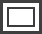
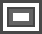
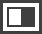
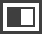
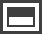
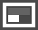
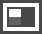
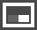
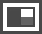
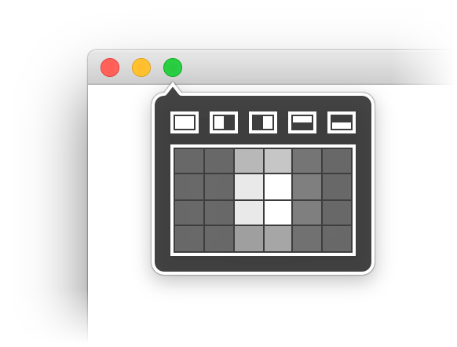

Usage
Moom can be used via the mouse or the keyboard, depending on your personal preferences—you don't need to choose one or the other, though: Moom can watch for both mouse and keyboard activation at all times. (You can separately disable either mode in Moom's Settings. One mode must be active at all times, however.)
Make sure you also read about Custom Controls, which greatly expand Moom's powers, and are usable in both keyboard and mouse mode.
Enable in Yosemite (OS X 10.10) and Mavericks (OS X 10.9)
To enable Moom in Mavericks, launch Moom on your Mac. If you haven't run Moom in Mavericks on that particular Mac before, you'll see this dialog:

Unlike older versions of OS X, usage of the Accessibility system is allowed (or denied) on an app by app basis; click Open System Preferences in the above dialog box, and Mavericks will take you to the Security and Privacy panel of System Preferences, with the Privacy tab preselected.
When this screen appears, you need to make sure that the box next to Moom is checked. If it's not, Moom will not function properly—the app will launch and run, but nothing will actually work!
You will have to enter an admin user's name and password to modify this panel. Once the box is checked, you're done and ready to use Moom.
Enable in Other Versions
In versions of OS X prior to Mavericks, usage of the Accessibility system was a simple yes/no choice; once enabled, it was enabled in all apps. Many programs use the Accessibility system, so the chances are good you've previously enabled it. But if you haven't, you'll see this dialog when you launch Moom for the first time:

Click the one button available, and the Accessibility System Preferences panel will open. When it does, check the box next to "Enable access for assistive devices:"
Once that box is checked, Moom is ready to use.
Mouse Mode - Zoom
Using Moom in mouse mode is as simple as moving your mouse over any green zoom button, then hovering for a tenth of a second (or the time period you've specified in the Mouse section of Moom's settings). When you do, the Moom palette will appear; you then either click, or click-and-drag, on one of the icons to move and/or zoom the chosen window. Here's what the palette looks like:
Using Moom in mouse mode, you can quickly move and zoom windows to half size or quarter size, or move windows to other displays.
A single click on any of the displayed icons tells Moom to move the window to the chosen side, and set it to half the available space at that location:
| Restore window to its original size and location. (Only visible after having previously moved/zoomed a window.) | |
|  | Resize window to full screen size, excluding the menu bar and the Dock. Note: If you hold down the Option key, the full-screen icon will change to the center icon , allowing easy window centering via the mouse. Use Shift-Option to place the window at absolute screen center. |
|  | These four icons move and zoom windows to each edge of the screen, and size them to take up half the available screen space. (So windows pinned to the left or right screen edge are half the screen width; those pinned to the top or bottom are half the screen height. |
|  | |
|  |
As soon as you click, the selected action will be performed on the window.
Custom controls in mouse mode
If you've enabled custom controls on the Mouse tab of Settings, then Moom's mouse interface gains one icon:
The small 'person' icon on the left is a drop-down menu. It contains any custom controls you've created, along with (if applicable) a menu item to revert the current window to its previous state, as the revert arrow is no longer available:
If you hold down the Option key, the custom icon will change into the restore window position icon, making it simpler to undo a Moomed window.
One of the Custom Controls you can create is Revert to Original Dimensions. If you create one of these custom controls, then Moom's built-in Revert entry won't show up (but your custom command will).
Corner pin, quarter size: Instead of clicking an icon, if you click-and-drag an icon, you can pin the window into a screen corner, and set it to take up one-quarter of the available space:
-
Click-and-hold on the left-edge (or right-edge) icon, then drag your mouse slightly up or down. As you do, you'll see the icon cycle between the three possible size and location options, depending on whether you started with the left- or right-edge icon:
Left edge:   Right edge:  
-
Click-and-hold on the top-edge (or bottom-edge) icon, then drag your mouse slightly left or right. As you do, you'll see the icon cycle between the three possible size and location options, depending on whether you started with the top- or bottom-edge icon:
Top edge: Bottom edge:
Release the mouse when the corner position you'd like to use is shown, and the window will move there, and resize to one-quarter of the screen.
Add the Option key: As noted above, If you hold down the Option key, you can use Moom's mouse interface to center a window. But that's not all; the Option key also provides a quick shortcut for creating quarter-size corner-pinned windows. With the Option key held down, Moom's mouse interface will look like this:
Just click on the quarter-sized window location you'd like to use, and Moom will do the rest. The first icon, as noted above, centers the window.
Move windows to other displays while Mooming: In mouse mode, you can not only move and zoom windows on the current display, but you can move and zoom them across displays, too.
To move and zoom a window to another display click-and-drag on one of the icons in the direction of the target display. So if your two displays are arranged vertically, drag up or down on the icon; if they're side-by-side, drag left or right. As you drag, a small arrow will appear, indicating that you will be affecting the targeted display. Here's how it looks on each of the standard icons:

Notice that there's no way to move and zoom to another display with a top-half or bottom-half action; those two buttons instead lead to corners. There's also no way to go to either side of another display; it will only jump to one of the edges/corners. For these reasons, if you want to move windows between displays with full control, you should use Custom Controls to get the job done.
Resize via grid: Moom can also resize windows via an onscreen grid in mouse mode (and in keyboard mode; see Settings help for more details on this). Grid resizing is disabled by default; enable (and configure) it on the Mouse tab of Moom's settings window.
Once enabled, a resize grid will appear below the standard Moom interface, as seen in the image at right.
The grid represents a small version of your screen, and the lighter squares show the size and position of the frontmost window. (An all-white square means that your window will completely fill that quadrant of your screen; shades of gray denote partial filling of other quadrants.)
To move and resize a window using the grid, either click on any individual square, or click-and-drag to move and resize the window to the size and location you've dragged out on the grid.
As you drag across the grid, Moom will highlight the actual screen area that you're dragging out on the grid.
You can change the size of the grid on the Mouse Settings tab of Moom's Settings window.
Mouse Mode - Snap
Once snap mode is enabled (in the Mouse section of Moom's settings), you can move and zoom a window by simply dragging it to a screen edge. What happens at each edge is defined on the Snap to Edges and Corners tab of the Mouse section of Moom's settings (see Mouse Settings help). You can also set the amount of time before a snap resize occurs, choose whether or not to watch for edges between multiple monitors, and if you'd like to revert resizing actions by dragging.
Using snap mode is simple: just drag a window to an edge or corner of a screen. After the delay period you've chosen in Moom's settings (0.2 seconds by default), a preview appears, showing the new size/location of the dragged window. For example, here's a window that's been dragged to the upper-left and then the upper-right corner of the display:
To resize the window after the preview appears, just release the mouse button. If you change your mind, drag the window away from the edge until the preview window disappears—no resizing will occur when you then release the mouse button.
Moom's snap mode generally won't work well with Spaces/Desktops, as you can switch Spaces/Desktops by dragging windows to screen edges. If you must use Moom's snap mode and Spaces/Desktops together, you should experiment with the delay value to find one that matches your usage of edge-dragging for Space/Desktop change. Unfortunately, there's no way to use multiple Desktops/Spaces while disabling the drag-to-edge-for-new behavior.
Keyboard Mode
To get started with Moom's keyboard mode, first read about Keyboard Settings in the Settings section of help. Those instructions will help you enable keyboard mode, and understand its basic operations.
To use Moom's keyboard mode, start by pressing the activation keyboard shortcut you defined in the Keyboard tab of Moom's settings panel. When you do, the Moom keyboard control bezel will appear, as seen in the top image at right. This bezel will remain onscreen until either two seconds pass with no input, or you execute an action that you've defined to automatically close the bezel.
Once enabled in Settings, you can press the activation keyboard shortcut again while the bezel is already onscreen to switch to Moom's grid-based resizing tool (lower image at right). See the Keyboard section of the Settings help for more on keyboard-based grid resizing.
When either the keyboard or grid bezel is onscreen, you can press the comma (,) key for fast access to Moom's Settings window.
In addition to the standard actions listed in the Keyboard Settings section of the Settings help, you can use the keyboard for the following operations:
One-key shortcut custom controls: If you create any single-key shortcuts for custom controls, these controls will only work when the keyboard bezel is onscreen. See the hot keys section of Custom Controls for more information on single-key shortcuts.
Corner pin, quarter size: To place a window in the corner of a screen at quarter-size, first use the defined Move & Zoom to Half Screen function, then immediately follow that command with another arrow key pointing towards the corner you'd like to use.
For example, if you've defined Command plus the arrow keys as your Move & Zoom to Half Screen command, you could pin a window in the lower left corner by first pressing Command-Left Arrow (pin to left edge at half width), then immediately pressing the Down Arrow (with the Command key still held down). Similarly, the upper-right corner would be Command-Right Arrow, Command-Up Arrow.
Move a Moomed window to another display: When you use the keyboard mode's 'move to other display' command, the chosen window is moved without resizing (when possible). But you can also move already-Moomed windows to other displays.
Assume you want to pin a window to the left edge of a display that's to the left of your main display, where the window is currently shown. Activate Moom's keyboard bezel, then press Command-Left Arrow, twice in quick succession. The first press will pin it to the left edge of the current display, and the second will pin it to the left edge of the other monitor.
You can position a window anywhere you like on the newly-chosen display by just pressing the proper keyboard shortcuts.
For instance, first move and zoom a window from the main display to the left-positioned display with Command-Left Arrow twice in quick succession. Then you can move and zoom the window around on that display as you wish, using your defined arrow and modifier key shortcuts.
If you want the window back on the main display, just press Command-Right Arrow twice in succession.
You can also, of course, use any Custom Controls you've created via the keyboard (assuming you've assigned them keyboard shortcuts).
AppleScript
Moom includes limited AppleScript support, so that you can activate saved layouts from other programs, or even write your own scripts. At present, Moom supports three basic commands:
1) Return a list of saved snapshots:
tell application "Moom"
list of snapshots
end tell
2) Activate a saved window layout:
tell application "Moom"
arrange windows according to snapshot named "Snapshot Name"
end tell
There's only one changeable value here: replace Snapshot Name with the name of the saved snapshot you'd like to activate.
If you have more than one saved snapshot with the same name, Moom will use the first saved snapshot when called via AppleScript. If you need access to the other saved snapshots, you'll need to first give them unique names within Moom—simply appending a unique counter digit would work fine, for instance.
3) Center the frontmost window, using the "OS X center," which is slightly above geometric center:
tell application "Moom"
center frontmost window
end tell
4) Center the frontmost window geometrically, i.e. exactly in the center of the display:
tell application "Moom"
center frontmost window geometrically
end tell
5) Save a window layout, and merge it into the existing named snapshot. The snapshot name is case sensitive, and if it doesn't exist, it will be created.
tell application "Moom"
save window layout and merge with snapshot "Snapshot name"
end tell
6) Save a window layout, and replace the existing named snapshot. The snapshot name is case sensitive, and if it doesn't exist, it will be created.
tell application "Moom"
save window layout and replace snapshot "Snapshot name"
end tell
If you have additional Moom features that you'd like to have scriptable, please let us know by sending an email to info@manytricks.com.